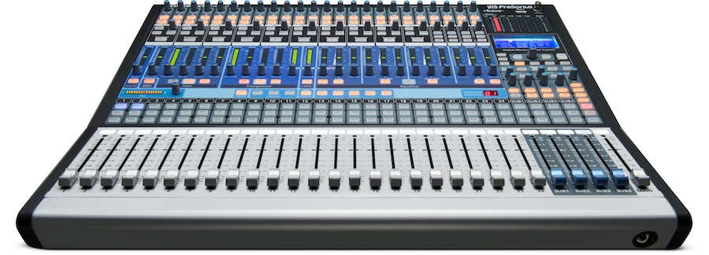
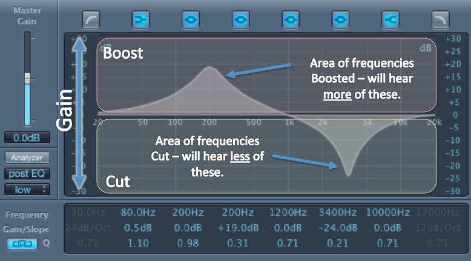

A Review
As mentioned in the previous topic, a sound wave's frequency (f) represents the number of cycles it goes through in 1 second — in other words, the opposite of its period (T). This number is measured in Hertz, or Hz. The frequency of a sound wave determines its "pitch," or how high or low the sound is interpreted by the brain.
If a sound's period is 1 second, its frequency is 0.5 Hz.
Likewise, if its frequency is 1000 Hz, then it completes
one cycle every 0.001 seconds — that's fast!
Range of Hearing
The human eye can only pick up a small degree of light waves within the electromagnetic spectrum; similarly, the human ear can only pick up a certain range of frequencies. The range of human hearing is about 20Hz - 20,000 Hz. In certain conditions, individuals may be able to perceive sounds ranging from 12Hz to 25,000Hz, but audibility varies on an individual basis. With age, the higher limits of this range can generally decrease.
Here's a sine wave with a frequency of 15Hz - can you hear it?
Here's one with a 20 kHz (20,000Hz) frequency. Any luck?
Sounds that are unperceivable by the human ear are referred to as ultrasonic. Fig 2.1 below shows an approximate graphical representation of the hearing ranges of humans compared to those of several different animals.
Animals that can hear ultrasonic frequencies utilize this trait through several means of survival like hunting, communicating, and even "seeing" (spatial positioning) by echolocation. Humans certainly use the sense of hearing for some of these same purposes; however, we're the only species that uses this sense for our entertainment.
The Importance of Frequency in Music
Fig 2.2 shows a sine wave sweeping the range of human hearing run through a spectrum analyzer. Take a look:
A spectrum analyzer is a tool that visualizes every frequency within the 20Hz-20kHz range that makes up an audio signal. The more prevalent a given frequency is within the sound, the higher up the graph will climb.
A sine wave is convenient for observation because it produces a pure tone, peaking only at its respective frequency. However, sine waves are an exception; every sound you hear encapsulates a complex range of frequencies, some more subtle than others. When a musical instrument produces an individual note, many successive harmonic frequencies are also emitted, unlike the pure tone of a sine wave. It's these harmonics that create every instrument's unique quality and tone of its sound, known as timbre. Harmonic series and timbre are covered in depth in Topic 3.0.
Here is the spectral analysis of a collection of everyday sounds, from starting a car to barking dogs. Observe the wide range of frequencies that make up each:
Equalization and Mixing
When it comes to recording instruments or voices and synthesizing sounds, producing music requires a lot of fine tuning and a good ear. Audio engineers and music producers deal with a huge range of sounds within every song; in order to have control over each audio track, a mixing board (mixer) is used.
Each instrument, voice, or synthesizer is assigned to an individual channel within the mixer (each volume slider on the picture above is a channel). These audio signals run through their unique channel, allowing their volume to be adjusted in context to the rest of the channels. Creating a balance in volume between every instrument is a process referred to as mixing. Alongside mixing volume, isolating each sound into a channel allows the producer to enhance and embellish the audio signal with special effects, as well as adjust each channel's balance of frequencies. This process of adding and removing frequencies from an audio signal is called equalization (EQ), which is done using an analogue or digital equalizer assigned to an individual channel.
A digital equalizer (used on a computer) looks very similar to a spectrum analyzer; a horizontal line spans across the spectrum (20Hz-20kHz), with adjustable points at certain ranges of frequencies, called frequency bands. Like the frequency analyzer, the frequencies produced by the sound running through the channel are displayed. An EQ is used to accentuate, dampen, or completely eliminate frequencies from the channel it is assigned to. Doing so allows for certain instruments or sounds to have more or less presence within a frequency range depending on their context in the song. If every audio signal went un-EQ'd, the result would be a bland, crowded and muddy sounding song.
As a general principal of equalization, producers aim to eliminate unnecessary frequencies from every instrument or voice. For example: when EQ'ing a channel with singing vocals running through it, all the frequencies below 30Hz (sub-bass) will be cut out completely. This process of subtractive equalization helps keep the mix clean because it allows more room for instruments to occupy the range that sounds best for each instrument or voice. If too many channels have overlapping frequencies, the mix will lack clarity and definition.
Equalizers allow control over ranges of frequencies (frequency bands). Each of these frequency bands encapsulates a certain tonal quality. Producers use EQ to emphasize or decrease these qualities for each instrument. Here's a breakdown of frequency bands across the spectrum:
-
1 | Sub Bass [20-80Hz]
At the lower extremity of the spectrum, these frequencies compose the deepest tonal quality in a mix. Sounds in the range provide a sense of power and rumble, and must be dealt with carefully to avoid an overly 'muddled' sound.
-
2 | Bass [80-250Hz]
Most tonal bass (identifiable pitch) is found in this range. These frequencies provide a quality of fullness, warmth, and over all "umph" to a mix.
-
3 | Lower-Mid Range [250-500Hz]
This range of frequency is considered "bass presence," as it adds clarity to the tonality of the bass in the previous range. Too much boost can create a "boxy" or overly dry tone in the mix.
-
4 | Mid Range [500Hz-2kHz]
Vocals and a large variety of instruments contain frequencies within this range. Boosting frequencies within this range can lead to a "tinny" or harsh tonal quality. Excessive frequencies in this range may cause ear fatigue, or an unpleasant feeling in the ears after extended listening.
-
5 | Upper-Mid Range [2-4kHz]
Within this range, the attack of guitars (their pluckiness) and drums (their *hit*) as well as vocals are most present. Boosts in this range create more "definition" and projection.
-
6 | Presence [4-6kHz]
Although spanning a small octave range, this range of frequencies is frequently used to increase melodic instruments and vocals sound more "present" and upfront.
-
7 | Treble [6-20kHz]
Frequencies in this range capture many instruments' harmonics, as well as small nuances in vocal tracks. This range is characterized by providing "brilliance," "shininess," and "sizzle" (sounds cool, right?).